SCENE AT 1X
12 solid props per 1024x768 screen. The 224px route has a north and south exit. This is an isolated art review, not a game layout.
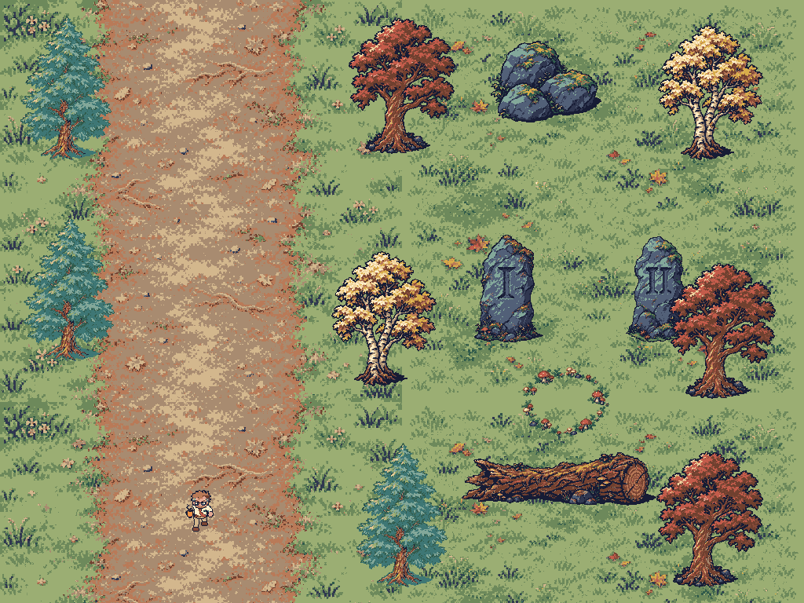
Full Life only, past 65. Art approval required before placement. Scroll images sideways on phones to preserve 1x. Trees include the existing orange maple at its native size for comparison.
12 solid props per 1024x768 screen. The 224px route has a north and south exit. This is an isolated art review, not a game layout.

[96, 160] · WALL
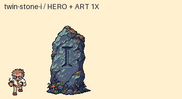
[96, 160] · WALL
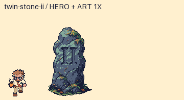
[512, 512] · WALK-THROUGH
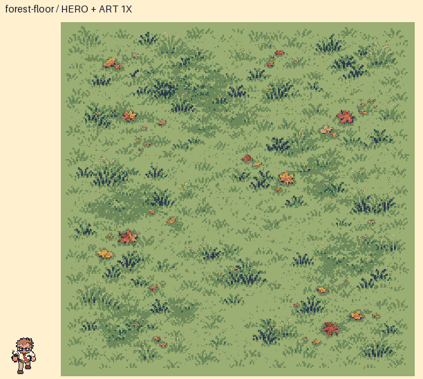
[512, 512] · WALK-THROUGH
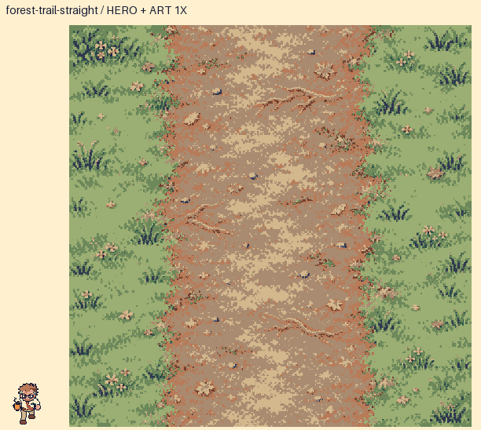
[512, 512] · WALK-THROUGH
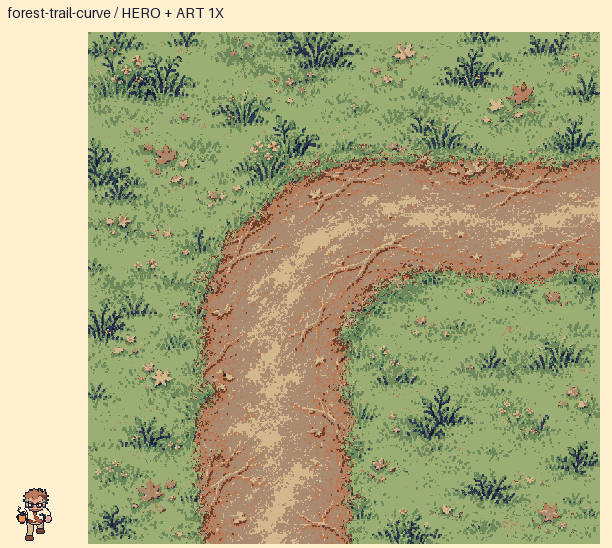
[256, 96] · WALL
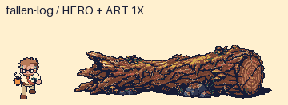
[160, 112] · WALL
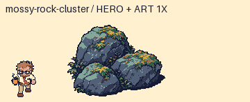
[128, 96] · WALK-THROUGH
[64, 64] · WALK-THROUGH
[144, 192] · WALL
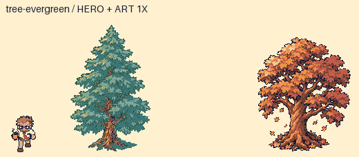
[144, 192] · WALL
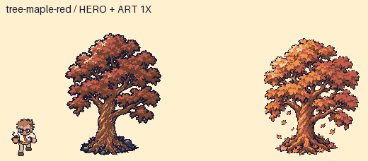
[144, 192] · WALL
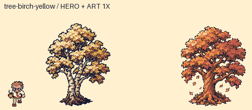